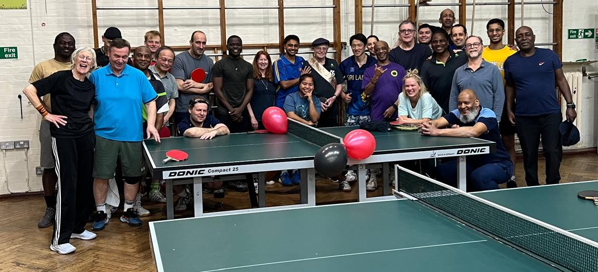
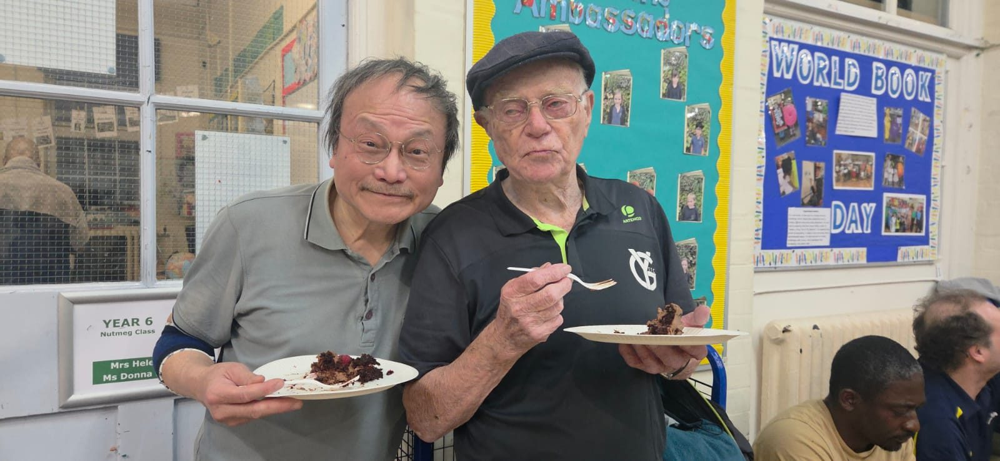
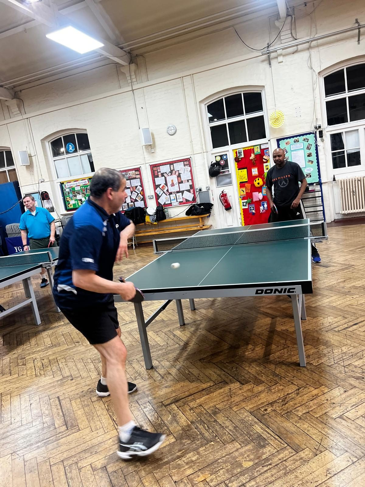
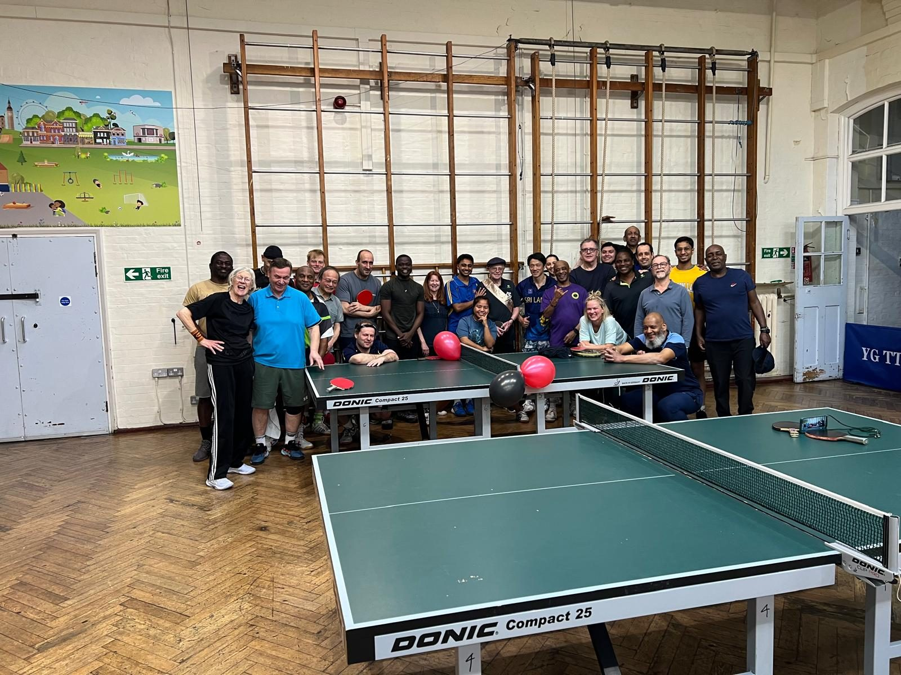
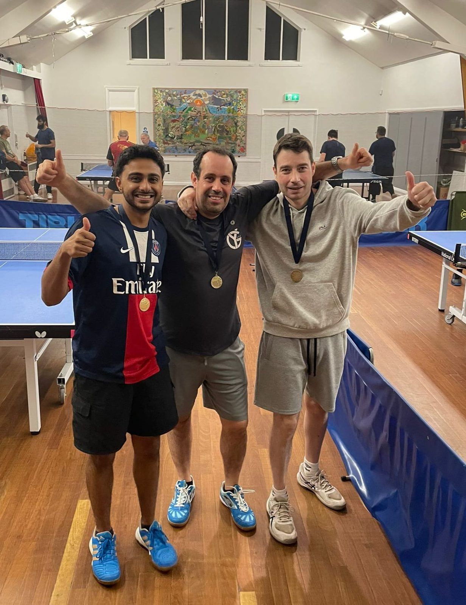
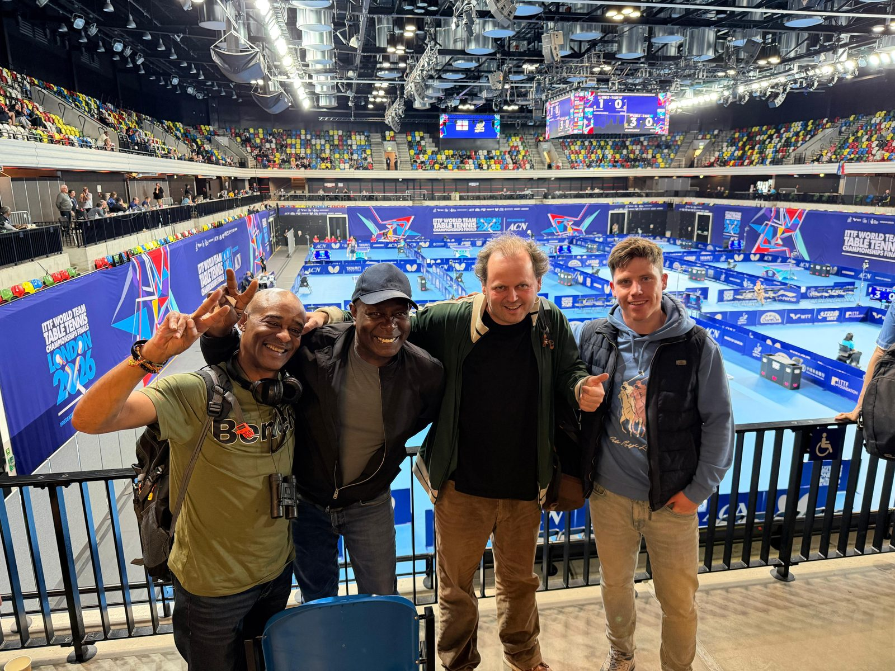
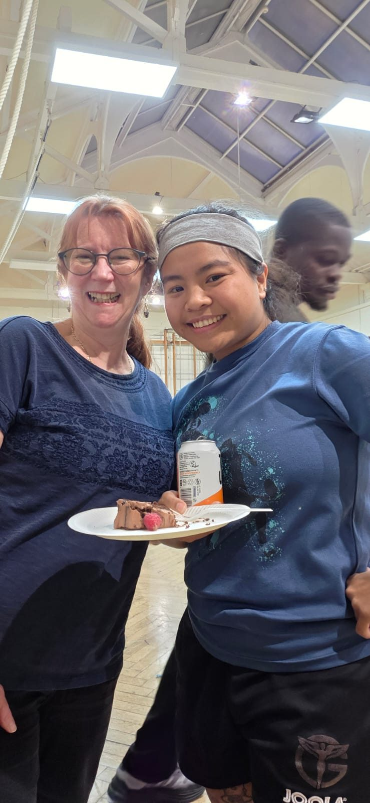
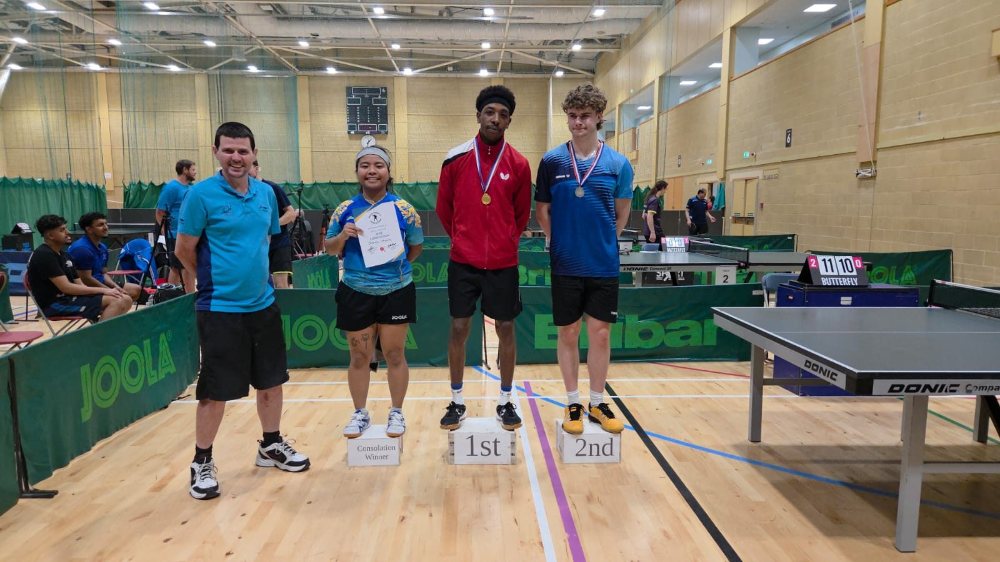
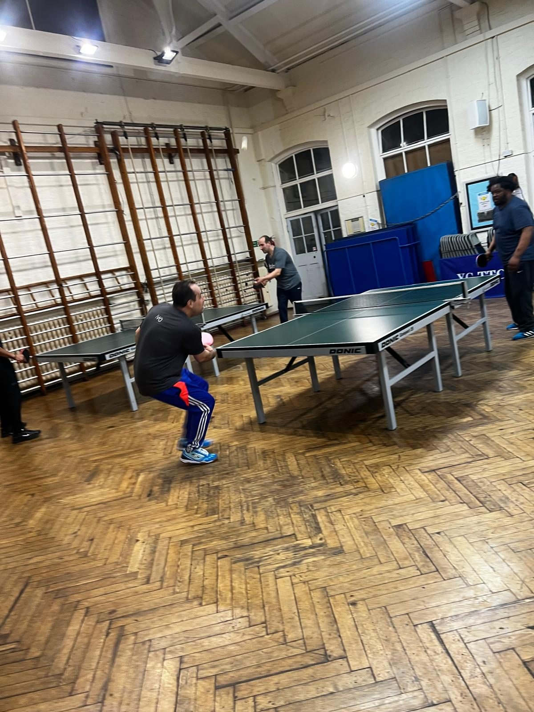

Our story
York Gardens TTC began in 1968, when Tom Draper founded Old Chesterton TTC in Battersea. Tom coached and ran the club right up to his mid-80s.
In the mid-1980s the club moved to the York Gardens community centre and took its name. A few moves later it settled at Fircroft Primary School in Tooting Bec, where we play today.
We now have over 160 members, from first-timers to league players, and two teams in the Sutton League this season. Mike Noble is our current club president.

Club nights







Come and play
Just turn up, there's no need to book.
- When
- Monday, Wednesday and Friday
7pm to 11pm - Cost
- £7 per session
- Kit
- Bring your own bat and balls. No kit yet? Get in touch with Mike before you come.
- Where
- Fircroft Primary School
Fircroft Road, Tooting Bec
London SW17 7PP - Questions
- Call or text Mike Noble, our club president, on 07957 300374